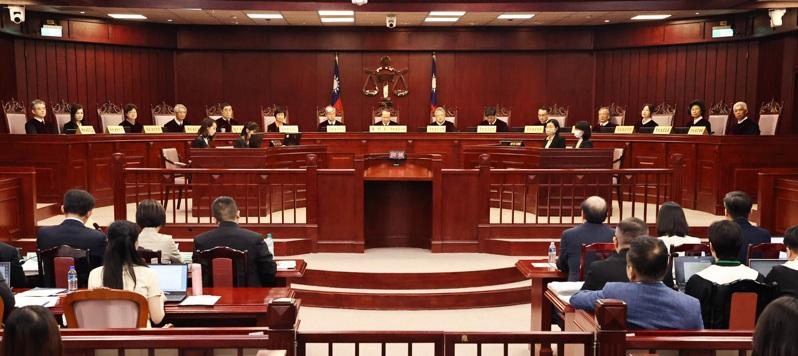

台立法院通过立法院职权行使法、刑法藐视国会罪等国会改革法案，民进党立法院党团、行政院、赖清德总统、监察院相继声请法规范宪法审查，宪法法庭明将行言词辩论，双方辩论争点题纲、专家学者、法庭之友等名单一次看。
宪法法庭本月19日已裁定国会改革法案释宪暂时处分案，立职法、刑法修正条文其中13条全部或一部分暂停适用；宪法法庭明日言词辩论流程，预定上午9点开庭、下午5点结束，并分为上下两场，上午聚焦立法程序、总统国情报告、反质询、人事同意权部分，下午则为调查权、听证会、藐视国会罪等规定。
双方辩论争点包括：
一、2024年6月24日修正公布之立法院职权行使法增订暨修正条文全文，及同日公布之刑法第141条之1，其立法程序是否有明显重大瑕疵？
二、立法院职权行使法下列条文之规定，是否违宪？
（一）总统国情报告部分：第15条之1、第15条之2、第15条之4
（二）质询部分：第25条
（三）同意权行使部分：第29条、第29条之1、第30条、第30条之1、第31条
（四）调查权部分：第45条、第46条、第46条之1、第46条之2、第47条、第48条、第50条之1、第50条之2、第51条、第53条之1第2项
（五）听证会部分：第59条之1至第59条之9
（六）其他受理部分
三、刑法第141条之1规定，是否违宪？
另外，宪法法庭也邀请政治大学法学院副教授林佳和、台湾大学法学院教授张文贞等担任学者专家，并提出意见书；台北律师公会、民间司法改革津津会、台湾青年法律人协会、台湾经济民主连合、中央研究院法律研究所研究员林建志、律师陈韦樵等人也提出法庭之友意见书。
本案以立委柯建铭等51人声请法规范宪法审查为主案，并行政院、总统、监察院声请案审理，关系机关立法院也已由立委吴宗宪、翁晓玲、黄国昌与诉讼代理人仉桂美、林石猛、陈清秀、叶庆元提出答辩状。